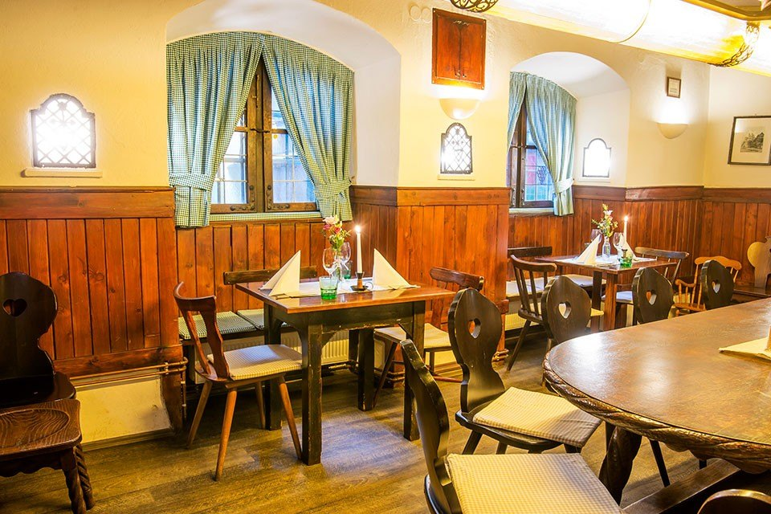
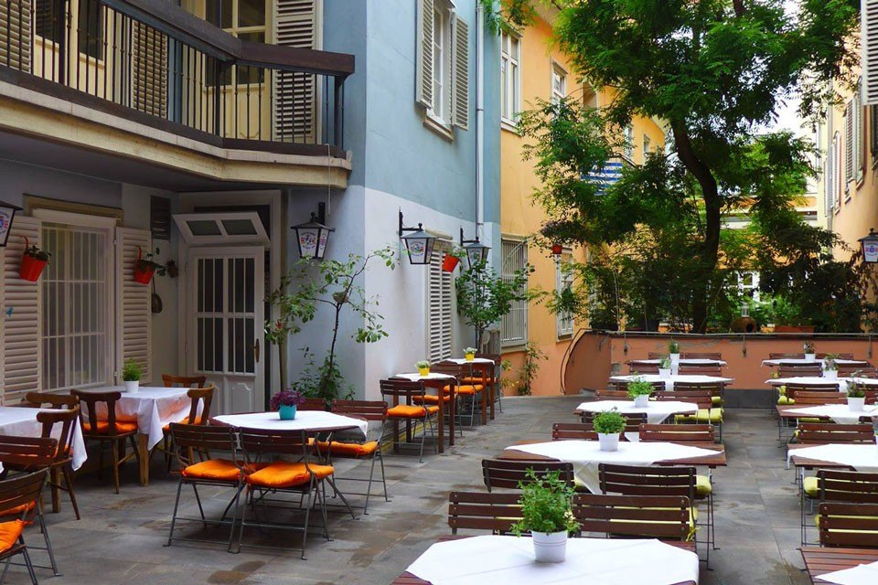
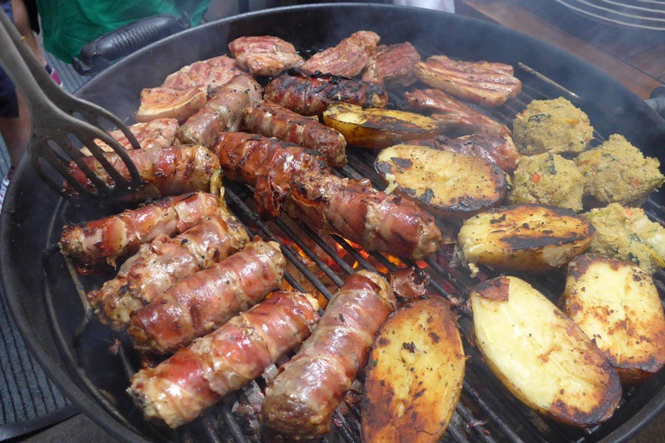
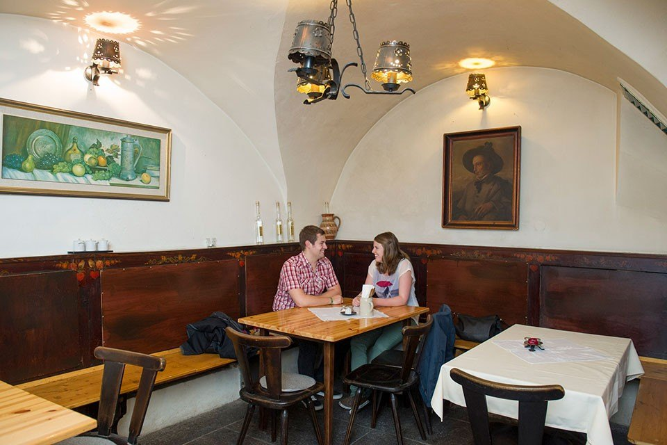
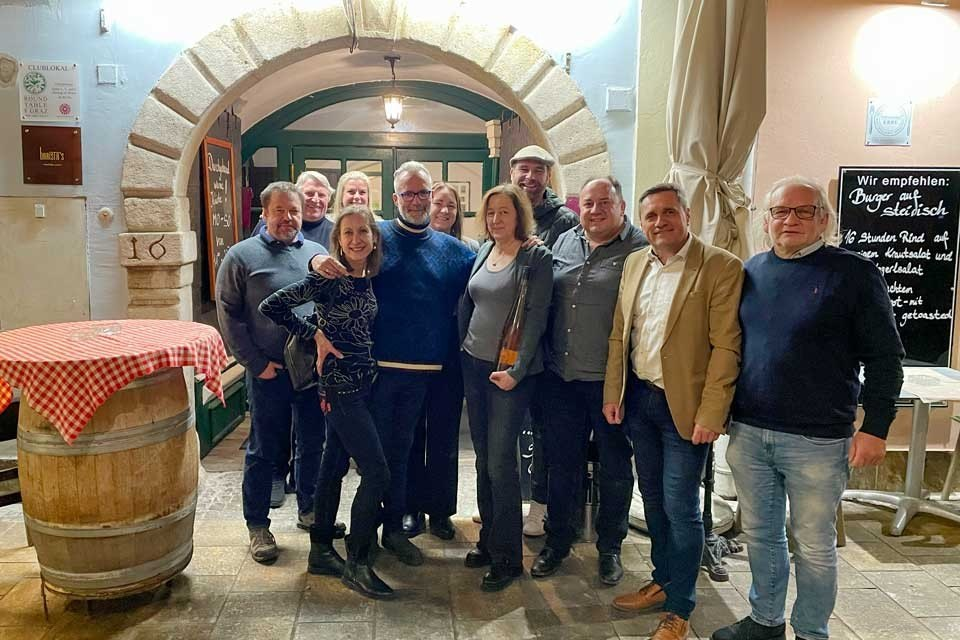

Die Stube
Gedeckte Tafel unter Butzenfenstern und Holzvertäfelung — der Raum, in dem seit 1934 gegessen wird.
Unverbindliche Gestaltungs-Vorschau · keine offizielle Website der Herzl Weinstube · erstellt von AVOS Solutions
Für 2 und mehr
Die Räumlichkeiten aus dem 17. Jahrhundert bieten mit ihren unterschiedlichen Größen den Rahmen für Zweisamkeit, Familienfeste und Firmenfeiern.
Gedeckte Tafel unter Butzenfenstern und Holzvertäfelung — der Raum, in dem seit 1934 gegessen wird.

Runder Tisch, grüne Vorhänge, Vertäfelung: für Runden, die nicht auf die Uhr schauen.

Ein Gewölbe aus dem 17. Jahrhundert, eingedeckt für größere Gesellschaften.

Innenhof unter dem Baum, mitten in der Altstadt und trotzdem aus dem Trubel heraus.
Platten und Buffets
In der altsteirischen Weinstube gibt es die Klassiker: Platten für zwei oder mehr Personen und Buffets für eine gemütliche Speisefolge ganz nach Belieben. Dazu reichen wir unsere steirischen Weine — und das Schnapserl für „danach“.
Unser Küchenchef gestaltet Buffet und Menü auf Wunsch nach Ihren Vorlieben. Weil das Vorlauf braucht, bitten wir um eine persönliche Anfrage per Telefon oder E-Mail.




Sagen Sie uns Anlass, Datum und ungefähre Personenzahl — wir melden uns mit einem Vorschlag.